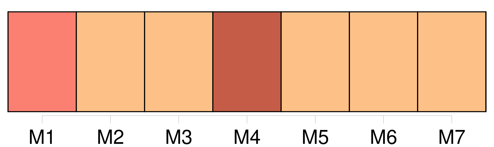
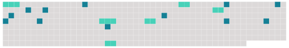

Longueur nb maillons : 18 mentions |
 |
[Une souffrance inconnue] montait du fond de son être. Il se raidit contre [elle] [1 phrases] [La douleur] grandissait, tranquille, sûre de [sa] force. Il ne savait pas ce qu’ [elle] était, ni jusqu’ où [elle] allait. [Elle] lui paraissait immense, et ne devoir jamais prendre fin. [2 phrases] Déjà [la souffrance] devenait moins aiguë. Mais il continuait de pleurer ; car il [la] sentait toujours près de lui, en lui. – L’ homme qui souffre peut diminuer son mal, en sachant d’ où il vient ; [il] l’ enferme par la pensée en un morceau de son corps, qui peut être guéri, arraché au besoin ; [il] en fixe les contours, [il] le sépare de lui. L’ enfant n’ a pas [cette ressource trompeuse] Sa première rencontre avec [la douleur] est plus tragique et plus vraie. Comme son être même, [elle] lui semble sans limites ; il [la] sent installée dans son sein, assise dans son cœur, maîtresse de sa chair.
Et cela est ainsi : [elle] n’ en sortira plus qu’ après l’ avoir rongée. [10 phrases]
[Sa douleur] s’ évanouit, son cœur se mit à rire ; et il glissa dans le rêve, avec un soupir d’ abandon. |
 |
Il est possible de télécharger la ressource sur la page Ortolang |
Si vous avez des questions ou vous voyez des erreurs, merci d'envoyer un mail à silvia.federzoni89@gmail.com |